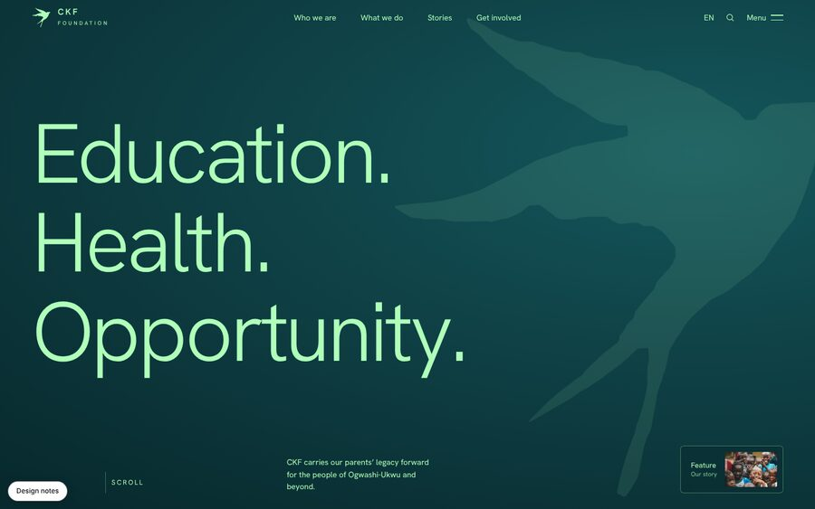
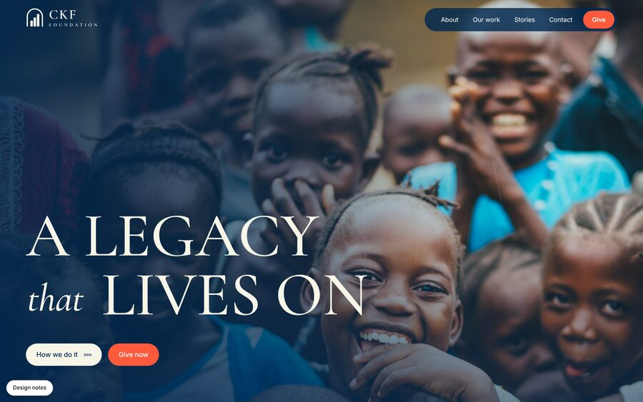
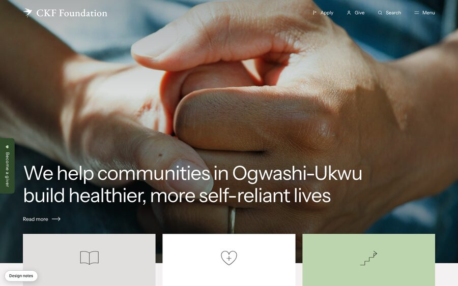
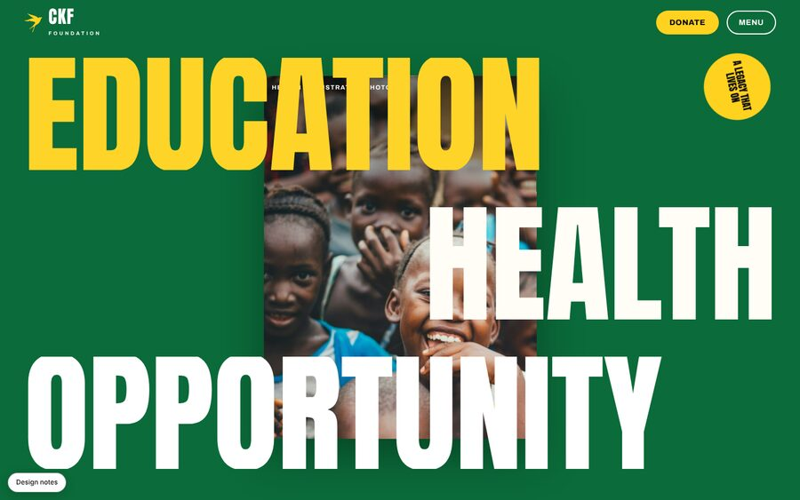

Canopy →
Deep teal, an enormous light mint headline and almost no chrome. The calmest, closest to Hempel Foundation.
- Base
- Hempel Foundation
- Plus
- Velux (menu), Solvatten (stat tiles)
- Fonts
- Hanken Grotesk

Roots →
Photo-led and warm: cream paper, navy ink, uppercase serif headlines with an italic connector word, and a coral accent.
- Base
- The Martin Family Initiative (MFI)
- Plus
- ONE (action bar), Solvatten (warm accent)
- Fonts
- Cormorant Garamond, Inter

Clearing →
Quiet and documentary: a full-bleed photo, a light sans headline, thin line icons and soft sage tiles.
- Base
- Velux Fonden
- Plus
- Solvatten (giver tab), MFI (editorial rows)
- Fonts
- Instrument Sans, EB Garamond

Momentum →
Loud and action-first: giant condensed words around a changing photograph, stacking programme cards and a pledge form.
- Base
- KLABU
- Plus
- ONE (ticker, pledge), Solvatten (yellow tiles)
- Fonts
- Anton, Archivo
Logos and wordmarks

Logo A is the swallow supplied by CKF, traced to a clean vector. Logo B is a new, deliberately plain mark: an arch holding three rising pillars for Education, Health and Opportunity. Open the brand sheet for wordmarks, lock-ups, icons and fonts.
What came from which reference
| Reference | Ingredients taken (never text, images, code or exact layout) | Used in |
|---|---|---|
| Hempel Foundation hempelfoundation.com | Deep teal field; very large light-weight mint headline; tiny intro text and a “feature” video card in the hero; minimal navigation; the geometric light grotesque feel (similar, not the same, font). | Concept 1 (base) |
| The Martin Family Initiative themfi.ca | Cream and navy palette; uppercase serif headings with an italic lowercase connector; floating pill navigation; coral side bar; three hairline-divided pillars; “What we do / How we do it” tabs with staggered cards; big serif numerals. | Concept 2 (base), Concept 3 (editorial rows) |
| Velux Fonden veluxfonden.dk | Full-bleed documentary photo with a light sans headline; classical serif wordmark; text-and-icon utility links; quiet coloured tiles with thin line icons; full-screen menu. | Concept 3 (base), Concept 1 (menu) |
| KLABU klabu.org | Saturated full-bleed colour; giant condensed uppercase words framing a central photograph; campaign energy. | Concept 4 (base) |
| Solvatten solvatten.org | Rounded yellow stat tiles with big numerals; pill “Donate” button; a vertical “become a giver” side tab. | Concepts 4, 3, 1, 2 |
| ONE one.org | Action-first structure: ticker, pledge form, persistent “take action” bar, bold black sections. (ONE sits behind a bot check, so this is drawn from its known approach rather than a live capture.) | Concepts 4 and 2 |
A note on two references. hempel.foundation and dmfi.ca could not be reached from the build environment. Hempel Foundation was captured at hempelfoundation.com (same organisation). “The MFI” was read as The Martin Family Initiative (themfi.ca). If you meant a different site, send the link and Concept 2 can be re-based on it.
Content and images
All words come from the CKF mission, vision and tagline you supplied. Stories and “ways to apply” are labelled Sample. No impact numbers are invented; the figures shown (3 pillars, 5 programme areas, 1 home community) are structural facts only. Photographs are illustrative stock from Unsplash used as placeholders, and most are not Nigerian. They do not depict CKF programmes or people and should be replaced with real CKF photography before launch.